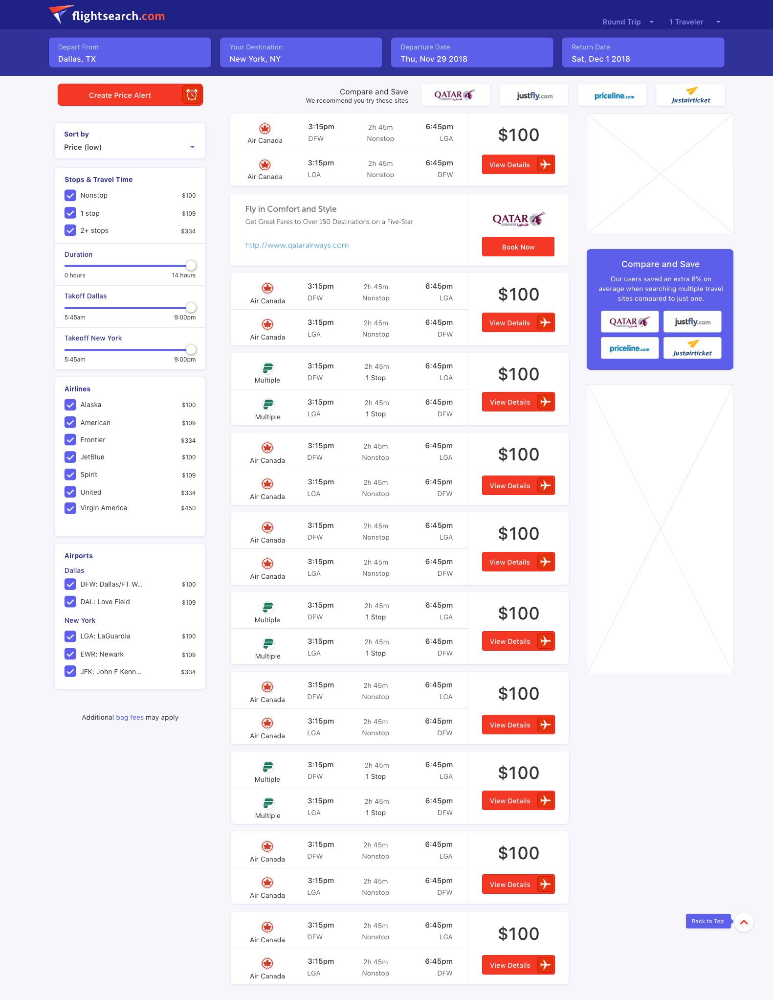
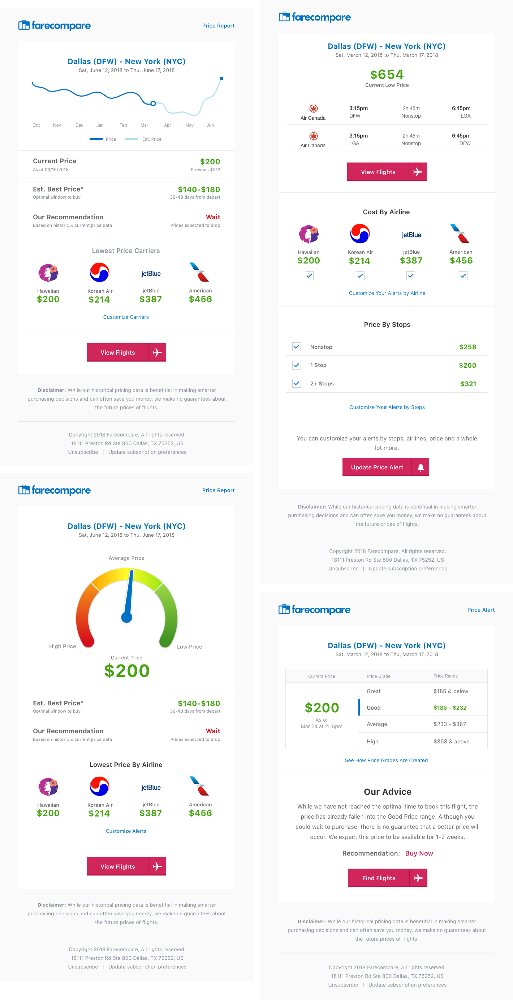
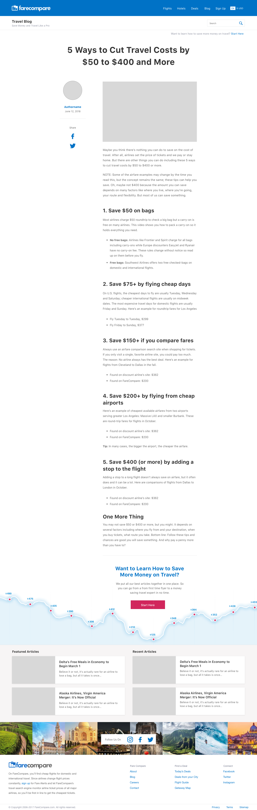
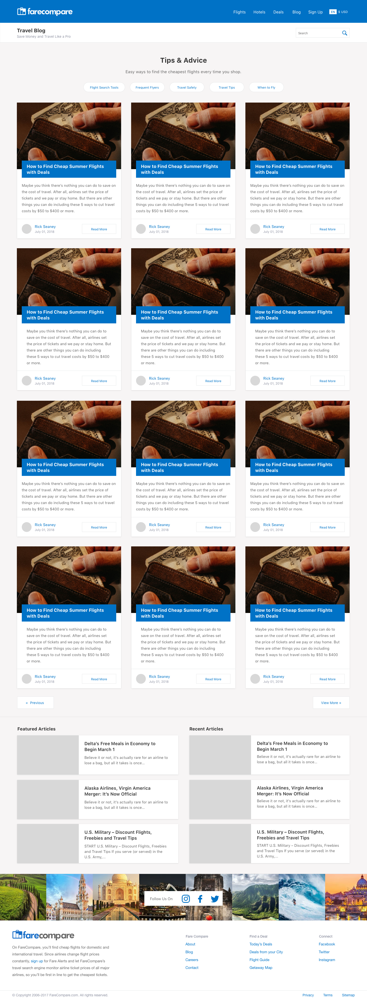

FareCompare
Some of My Design Work
Some of My Design Work
I previously worked at FareCompare, a small flight search and data company as the sole product designer. While there I spent time on a variety of projects, some of which were providing updated design to many of the older applications being converted to React.JS, starting with the main flights search app, hotels and auto search, the account screens, some email templates, getaway map and deals areas. Pretty much everything.
I still do some freelance work for them. The latest project was to build a similar site with updated but not completly different interface elements. Basically a reskin. Created a quick mark and logo and the interface for the homepage and main search pages.
The interface remained similar so the same code base could be used, just with a design refresh to the colors and styles of the elements.
With the Farecompare site, my goal was to establish a little more modern look without moving too far away from current colors, style and branding. With established apps, it’s best to make incrimental changes instead of taking a sledghammer to something, even if it might need it. I lightened up the grey background and simplified the color pallet. The only color addition was a accent color for action buttons.

Some of the styles for input field states. Currently, we don't offer some of this functionality but it’s in the works. Also, a few little illustrations.

Email template concepts for price alerts, giving users even better data not only about current prices but using historic data to predict price changes.
Below is an initial homepage design concept. The style and content chagned over time. The current homepage doesn't really have much of a call to action above the fold so I included space for that. The other element I felt was important was to get email sign ups as soon as possible; giving users deals from their local airport/city.

After creating the flight results I created something similar for hotels to keep things consistent. The map will be a new integration, still in the works.

Another project that was in the works while I was working here was advanced options for price alerts. Instead of just the standard change in price email we'll be allowing users to select specific airlines, stops, price ranges, and lots of other features.

And yet another project is a deals app, which will display deals from the selected departing city or airport.

Some more styles showing the interactions for the deals. Users will be able to favorite certain destinations which will appear more frequently on the deals page and also within email being sent.

Updated blog templates.
 